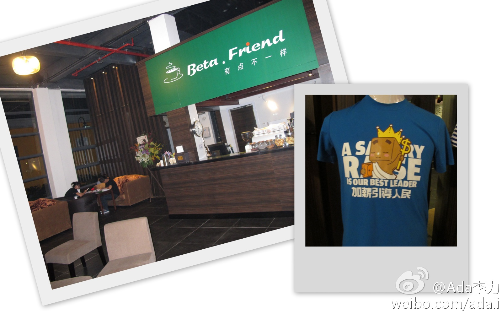

听说广州Beta咖啡上周日开业, 就一起去逛逛, 为活动踩点. #珠三角技术沙龙#组委会有朋友是股东, 不知道是这个原因, 还是服务生真心希望我们早点离开, 都10点半了, 我们还在神侃, 送了壶酸梅汤呢. 店里的T-Shirt深得我心, 上有大字"加薪引导人民". 
我倒觉得未必是刻意经营, 本身喜欢做这事情, 而且自己也能得到快乐和提高, 找到了一帮志同道合的人, 社区形成和发展的事情就顺理成章了. 广东特有的务实气氛, 让他们也不会给自己挂上太多的负担. //@fiona_duan:其中两位都在广州见过，参加过我们的活动，比较懂得经营社区。---:抱歉，此微博已被作者删除。查看帮助： 网页链接
通过@微盘 分享文件"Java 7 Launch Kit USB Files.zip", 这是JDK 7发布活动的文件包, 有PPT, 文档, NetBeans上的demo等, 原来提供给全球Java User Group Leader用的. 上次听到南京的@nacytina 想在当地做Java讲座, 现在上传分享. 网页链接
某个万金油型的架构师, 在诋毁程序员. 把对固定语言的理解, 等同于固定的思维, 写这个文章的人, 自己看问题的方式有问题.@中国计算机报:好的程序员做不出好的软件设计 你不能看到一个程序员还不错，就把他推到系统分析师、软件设计师或软件架构师的位置上。如果你在团队或公司里寻找一个能胜任软件架构师或设计师这样重要位置的人时，首先出现在脑子里... 网页链接
广州培训的讲师Poela@大毛豆妈妈 给五岁的儿子写博客, 每周写两次, 写了有五十万字了 网页链接 . 我说写点技术性的东西多好, Poela说她很喜欢写作, 但写东西也需要Passion. 看起来公司多些原创技术文章, 得动用KPI才行.
晚上和@开源中国 站长红薯聚了聚, 才知道他一直给IBM的DeveloperWorks投稿, 有十年了. 技术文章写得靠谱,而且能量产的人真的不多. 红薯说DW最近有些混乱, 文章质量在下降, 很多产品介绍, 而且稿费也拖很长时间. 即时这样, DW在开发者社区上也值得O记学.
原来是这样？我也是刚知道还有这些东西。但知道了又如何呢？ //@刘吉东_ST:回复@jiangshapub: O的技术文档都在Metalink，如果你有CSI,O的技术文档比DW又多又好。但是18M内和外能看到的是一样多的。@Ada李力:晚上和@开源中国 站长红薯聚了聚, 才知道他一直给IBM的DeveloperWorks投稿, 有十年了. 技术文章写得靠谱,而且能量产的人真的不多. 红薯说DW最近有些混乱, 文章质量在下降, 很多产品介绍, 而且稿费也拖很长时间. 即时这样, DW在开发者社区上也值得O记学.
我个人以为(不代表公司立场): 非常赞同你的看法! //@胡德民PeterHu：我个人以为（不代表公司立场）：做社区，要真心关切Audience眼前的问题与困难，协助她们建立职涯发展方向，让他们与社区组织一同成长。这是需要拿心出来做的。做社区绝不能跟做营销混为一谈，其他都是比较次要的 @Ada李力@刘吉东_ST@Ada李力:晚上和@开源中国 站长红薯聚了聚, 才知道他一直给IBM的DeveloperWorks投稿, 有十年了. 技术文章写得靠谱,而且能量产的人真的不多. 红薯说DW最近有些混乱, 文章质量在下降, 很多产品介绍, 而且稿费也拖很长时间. 即时这样, DW在开发者社区上也值得O记学.